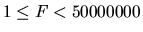
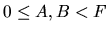
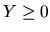

| Skyscraper Floors |
What a great idea it is to build skyscrapers! Using not too large area of land, which is very expensive in many cities today, the skyscrapers offer an extremely large utility area for flats or offices. The only disadvantage is that it takes too long to get to the upper floors. Of course these skyscrapers have to be equiped not only with a stairway but also with several elevators. But even using ordinary elevators is very slow. Just imagine you want to get from the very top floor to the base floor and many other people on other floors want the same. As a result the elevator stops on almost every floor and since its capacity is limited and the elevator is already full from the upper floors, most stops are useless and just cause a delay. If there are more elevators in the skyscrapers, this problem is a little bit eliminated but still not completely. Most people just press all the buttons of all the elevators and then take the first one so that all elevators will stop on the floor anyway.
However, the solution exists as we shall see. The Antique Comedians of
Midilesia headquarters reside in a skyscraper with a very special
elevator system. The elevators do not stop on every floor but only on
every X-th floor.
Moreover each elevator can go just to a certain floor Y
(called starting floor) and cannot go any lower. There is one
high-capacity elevator which can stop on every elevator's starting
floor.
The ACM has a big problem. The headquarters should be moved to
another office this week, possibly on a different floor.
Unfortunately, the high-capacity elevator is
out of order right now so it is not always possible to go to the base
floor. One piece of furniture cannot be moved using the stairway because it
is too large to pass through the stairway door. You are to write
a program that decides whether it is possible to move a piece of
furniture from the original office to the other.
The input consists of N cases. The first line contains only one positive integer N. Then follow the cases. Each case starts with a line containing four integers F, E, A, B, where F,  determines the number of floors in the skyscraper (this means that there are floors 0 to F-1), E, 0 < E < 100 is the number of elevators and A, B,  are numbers of the two floors between which the piece of furniture should be moved. Then follow E lines. Each of them contains description of one elevator. There are exactly two integers X and Y, X > 0,  at each line. Y determines, that the elevator starts on the Y-th floor and X determines, that it stops on every X-th floor, e.g. for X = 3, Y = 7 the elevator stops on floors 7, 10, 13, 16, etc.).
For each case, print exactly one line. If floor B is reachable from floor A not using the stairway, print the sentence `It is possible to move the furniture.', otherwise print `The furniture cannot be moved.'.
2 22 4 0 6 3 2 4 7 13 6 10 0 1000 2 500 777 2 0 2 1
It is possible to move the furniture. The furniture cannot be moved.